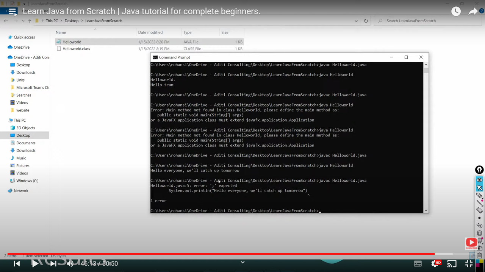

It has been mentioned that we understand the inner workings of the programming, so we would try to look at the python code
def two_sum(num,target):
for i in range(0,len(num)):
pointer_1=num[i]
if pointer_1+num[i+1]==target:
result=[i,i+1]
return result
These are simplest line of codes, but if we try to replicate the same thing over Java, we would be getting Array out of bounds error, because when we do num[i+1], we have got to take care of the fact that within the loop at the end, it's gonna go out of bounds for sure if we need to take care of that. In Python, we didn't need to take care for that because Python is basically a tool to solve complex problems not necesarily restricted to programming fundamental but a lot more. But in Java, we have to make sure to take care of the core programming concepts. Nevertheless, Java is strictly oops based. Finally the same code in Java is put at the bottom.
package LeetCode;
import java.util.Arrays;
public class Solution {
public static void main(String[] args) {
System.out.println(Arrays.toString(twoSum(new int[]{2, 7, 11, 15}, 9)));
}
public static int[] twoSum(int[] nums, int target) {
int[] result = new int[2];
for (int i = 0; i < nums.length; i++) {
int pointer_1 = nums[i];
if (i+1<=nums.length-1){
if(pointer_1 + nums[i + 1] == target){
result = new int[]{i, i + 1};
}
}
}
return result;
}
}
[0, 1]https://leetcode.com/problems/two-sum/Nevertheless, the solution needs to be fixed here because I was not checking the solution over LeetCode, here's the complete view.


Java is an object-oriented programming language where every program has at least one class. Programs are often built from many classes and objects, which are the instances of a class.A class is a user defined blueprint or prototype from which objects are created. It represents the set of properties or methods that are common to all objects of one typeAn object is an instance of a class. A class is a template or blueprint from which objects are created. So, an object is the instance(result) of a class.
The use of the interpreter is make something, platform independent. How does intepreter do it, is through it's patience of reading line by line or maybe everything with absolute detail. When we say absolute detail, it is byte level of absolution- 0s and 1s.
The Java platform is designed from the ground up to support concurrent programming, with basic concurrency support in the Java programming language and the Java class libraries.at the same time; simultaneously.concurrent programming, computer programming in which, during a period of time, multiple processes are being executed. ... The term parallel computing is also used for programming designed for a multitasking environment, where two or more programs share the same memory while running concurrently.Java is robust as it is capable of handling run-time errors, supports automatic garbage collection and exception handling, and avoids explicit pointer concept. Java has a strong memory management system. It helps in eliminating errors as it checks the code during both compile and runtime.A runtime error occurs when a program is syntactically correct but contains an issue that is only detected during program execution. These issues cannot be caught at compile-time by the Java compiler and are only detected by the Java Virtual Machine (JVM) when the application is runningA Java virtual machine is a virtual machine that enables a computer to run Java programs as well as programs written in other languages that are also compiled to Java bytecode.In computer science, garbage collection is a form of automatic memory management. The garbage collector attempts to reclaim memory which was allocated by the program, but is no longer referencedIn computing and computer programming, exception handling is the process of responding to the occurrence of exceptions – anomalous or exceptional conditions requiring special processing – during the execution of a program.A pointer is a variable that stores a memory address. Pointers are used to store the addresses of other variables or memory items. Pointers are very useful for another type of parameter passing, usually referred to as Pass By Address. Pointers are essential for dynamic memory allocation.(of a process or system) characterized by constant change, activity, or progress.In Java, all objects are dynamically allocated on Heap. ... In Java, when we only declare a variable of a class type, only a reference is created (memory is not allocated for the object). To allocate memory to an object, we must use new(). So the object is always allocated memory on heap.Heap memory is a part of memory allocated to JVM, which is shared by all executing threads in the application. It is the part of JVM in which all class instances and are allocated. It is created on the Start-up process of JVM. It does not need to be contiguous, and its size can be static or dynamic.A Java Thread is like a virtual CPU that can execute your Java code - inside your Java application. when a Java application is started its main() method is executed by the main thread - a special thread that is created by the Java VM to run your application.In Java, memory management is the process of allocation and de-allocation of objects, called Memory management. Java does memory management automatically. Java uses an automatic memory management system called a garbage collector. Thus, we are not required to implement memory management logic in our application.Compile time is the period when the programming code (such as C#, Java, C, Python) is converted to the machine code (i.e. binary code). Runtime is the period of time when a program is running and generally occurs after compile time.entire Java(which is some form of high level language)code to a low level language(machine language). Again, a compiler converts the entire java code into machine language. Thereafter, interpreter comes into action and reads this machine level code(line by line) and executes the program. 


